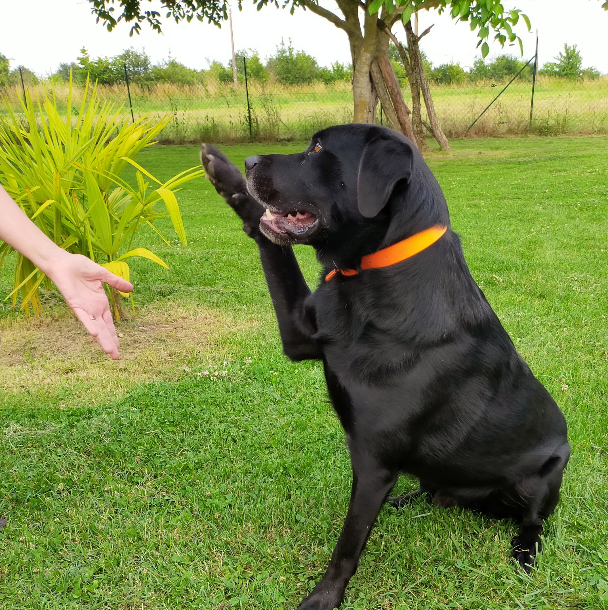

🌟 Éducation positive
Je crois qu'un chien bien éduqué est avant tout un chien épanoui et compris.
Mon approche repose sur le respect, la bienveillance et la motivation du chien.
Grâce à des méthodes douces et adaptées, je vous aide à :
- Enseigner les bases de l'obéissance (assis, rappel, marche en laisse, etc.)
- Renforcer la complicité et la confiance entre vous et votre compagnon
- Faciliter son intégration harmonieuse dans votre quotidien et votre environnement
Chaque séance est personnalisée en fonction de l'âge, du caractère et des besoins spécifiques de
votre chien.
🐶 Rééducation comportementale
Certains chiens rencontrent des difficultés qui compliquent la vie au quotidien.
Agressivité, peur, destruction, aboiements excessifs, fugues… ces comportements ne sont pas une
fatalité.
Je vous accompagne pour :
- Identifier les causes profondes du problème
- Mettre en place un plan de rééducation sur mesure
- Vous donner les outils et les bonnes pratiques pour retrouver une relation sereine et
équilibrée
Mon objectif : vous aider à comprendre votre chien et à transformer ses comportements
indésirables en attitudes adaptées.
🤝 Mon engagement
Que vous souhaitiez poser de bonnes bases dès le plus jeune âge ou résoudre une difficulté déjà
présente,
je travaille main dans la patte avec vous pour bâtir une relation harmonieuse, durable et pleine
de complicité.
